Topics:
- bibliography (Jonathan)
- Footnotes
- Asides
- Headers and levels
- markdown tables
- rendering R tables
- inserting images, hyperlinks, boldface lettering, etc.
- understanding the structure of YAML metadata
- code chunk options
What is YAML?
The initial portion of your Rmarkdown document, fenced in between the 3 dashes --- on the top and bottom, a represents the YAML metadata or YAML frontmatter of the document. It is named according to the fact the top section of the document is written in the YAML language syntax - YAML is an recursive acronym that stands for YAML ain’t markup language.
The metadata defined by the code defines properties of the document that control aspects of its content, appearance, and formatting. Much of the ability to extend and customize the functionality of an Rmarkdown document arises from a suitable specification of the YAML metadata, and hence it is worth some investment of effort to learn the fundamentals.
The general language guide is a useful reference, and the connection between R and YAML is best appreciated from the vignette associated with the ymlthis package.
The basic idea of YAML is to collect as data a set of key value pairs key: value, e.g.,
---
author: Amit Gandhi
---The structure of metadata is isomorphic to a named list in R. In particular we can convert from a list to a YAML specification.
metaDat <- list(author = "Amit Gandhi")
yml(metaDat)
---
author: Amit Gandhi
date: '`r format(Sys.Date())`'
---draw_yml_tree(metaDat)
└── author: Amit GandhiOr vice-versa, the metadata of a document can be retreived as a named list in R
List of 9
$ title : chr "Elements of Rmarkdown and R"
$ description: chr "A look at some of the elements of style for your blog posts.\n"
$ author :List of 1
..$ :List of 1
.. ..$ name: chr "Amit Gandhi"
$ date : chr "02-28-2021"
$ output :List of 1
..$ distill::distill_article:List of 1
.. ..$ self_contained: logi FALSE
$ css : chr "styles.css"
$ params :List of 1
..$ year:List of 1
.. ..$ value: int 80
$ preview : chr "https://raw.githubusercontent.com/rstudio/hex-stickers/master/PNG/rmarkdown.png"
$ categories : chr "lecture"The other key idea is that of nesting - a field in the YAML frontmatter can have other key-value pairs as its value. The nesting is indicated by an indented space
---
author: Amit Gandhi
output: distill::article:
self_contained: true
--- The analogous data structure in R is a nested list
metaDat <- list(author = "Amit Gandhi", output = list(`distill::article` = list(self_contained = "TRUE" ) ) )
yml(metaDat)
---
author: Amit Gandhi
output:
distill::article:
self_contained: 'TRUE'
date: '`r format(Sys.Date())`'
---The hierarchical structure can be visualized as
draw_yml_tree(metaDat)
├── author: Amit Gandhi
└── output:
└── distill::article:
└── self_contained: 'TRUE'To understand the functionality the YAML nested syntax is achieving, observe that the value of the field outpt in the frontmatter indicates the function used to render the Rmarkdown file. The function in this case is distill::article. If we examine the options to this function, we can see many potential arguments.
help_console("distill_article", "distill", format = "html")
| distill_article | R Documentation |
R Markdown format for Distill articles
Description
Scientific and technical writing, native to the web.
Usage
distill_article( toc = FALSE, toc_depth = 3, toc_float = TRUE, fig_width = 6.5, fig_height = 4, fig_retina = 2, fig_caption = TRUE, dev = "png", smart = TRUE, self_contained = TRUE, highlight = "default", highlight_downlit = TRUE, mathjax = "default", extra_dependencies = NULL, theme = NULL, css = NULL, includes = NULL, keep_md = FALSE, lib_dir = NULL, md_extensions = NULL, pandoc_args = NULL, ... )
Arguments
toc
|
|
toc_depth
|
Depth of headers to include in table of contents |
toc_float
|
Float the table of contents to the left when the article is displayed at widths > 1000px. If set to |
fig_width
|
Default width (in inches) for figures |
fig_height
|
Default height (in inches) for figures |
fig_retina
|
Scaling to perform for retina displays (defaults to 2, which currently works for all widely used retina displays). Set to |
fig_caption
|
|
dev
|
Graphics device to use for figure output (defaults to png) |
smart
|
Produce typographically correct output, converting straight quotes to curly quotes, |
self_contained
|
Produce a standalone HTML file with no external dependencies, using data: URIs to incorporate the contents of linked scripts, stylesheets, images, and videos. Note that even for self contained documents MathJax is still loaded externally (this is necessary because of its size). |
highlight
|
Syntax highlighting style. Supported styles include “default”, “rstudio”, “tango”, “pygments”, “kate”, “monochrome”, “espresso”, “zenburn”, “breezedark”, and “haddock”. Pass NULL to prevent syntax highlighting. |
highlight_downlit
|
Use the downlit package to highlight R code (including providing hyperlinks to function documentation). |
mathjax
|
Include mathjax. The “default” option uses an https URL from a MathJax CDN. The “local” option uses a local version of MathJax (which is copied into the output directory). You can pass an alternate URL or pass |
extra_dependencies
|
Additional function arguments to pass to the base R Markdown HTML output formatter |
theme
|
CSS file with theme variable definitions |
css
|
One or more css files to include |
includes
|
Named list of additional content to include within the document (typically created using the |
keep_md
|
Keep the markdown file generated by knitting. |
lib_dir
|
Directory to copy dependent HTML libraries (e.g. jquery, bootstrap, etc.) into. By default this will be the name of the document with |
md_extensions
|
Markdown extensions to be added or removed from the default definition or R Markdown. See the |
pandoc_args
|
Additional command line options to pass to pandoc |
…
|
Additional function arguments to pass to the base R Markdown HTML output formatter |
Details
Distill articles feature attractive, reader-friendly typography, flexible layout options for visualizations, and full support for footnotes and citations.
We can see many options associated with the function. If we want to use the default values we can simply associate the value default with the field distill::article.
---
<yaml>
output:
distill::distill_article: default
<yaml>
---But if we wish to set any of the arguments, we must engage another nest of key value pairs, e.g.,
metaDat <- list(author = "Amit Gandhi", output = list(`distill::article` = list(self_contained = "TRUE", toc = "TRUE" ) ) )
yml(metaDat)
---
author: Amit Gandhi
output:
distill::article:
self_contained: 'TRUE'
toc: 'TRUE'
date: '`r format(Sys.Date())`'
---draw_yml_tree(metaDat)
├── author: Amit Gandhi
└── output:
└── distill::article:
├── self_contained: 'TRUE'
└── toc: 'TRUE'Instead of nested data capturing key-value pairs (which are named lists), the value of a field if its more complex than a simple value can be an unnamed vector, such as
metaDat <- list(author = c("Amit Gandhi", "coauthor"), output = list(`distill::article` = list(self_contained = "TRUE", toc = "TRUE" ) ) )
yml(metaDat)
---
author:
- Amit Gandhi
- coauthor
output:
distill::article:
self_contained: 'TRUE'
toc: 'TRUE'
date: '`r format(Sys.Date())`'
---Observe this is captured in YAML code as
---
author:
- A
- B
- C
---where each element of the vector is entered with a new line along with a - without a need for indentation.
A slight elaboration of this pattern is grouped data, as arises with the params field in the frontmatter
---
params:
- a: 1.0
input: numeric
- data: data.csv
input: text
---which is useful to group related data. The corresponding R data structure is an unnamed list, e.g.,
list(params = list( list(a = 1.0, input = "numeric"), list(data = "data.csv", input = "text") ) ) %>% yml()
---
params:
- a: 1.0
input: numeric
- data: data.csv
input: text
author: Amit Gandhi
date: '`r format(Sys.Date())`'
---There are a few differences with R and YAML that should be recognized from our exercise. The first is that string values do not have to be quoted, unless they contain special characters, e.g.,
---
title: 'R Markdown: An Introduction'
---The string value is quoted because of the presence of the special character (a colon).
Also observe that whereas the logical values in R are TRUE/FALSE, in YAML they can be yes/no, true/false, or on/off.
On the usefulness of parameterized documents
THe parameter field in the YAML front matter as it allows for the creation of parameterized reports. Such report generation is especially powerful when used in conjunction with the glue and epoxy packages, which we explore below.
Lets use the BLP data (borrowing from Jonathan and Sheng’s project.)
First import the data
carDat = read_csv("../jonathan-sheng-algorithmic-demand-estimation/blp.csv")
Lets use a dplyr verb to count the number of observations by model_year
carDat %>%
count(model_year)
# A tibble: 20 x 2
model_year n
* <dbl> <int>
1 71 131
2 72 193
3 73 69
4 74 81
5 75 131
6 76 88
7 77 101
8 78 91
9 79 90
10 80 125
11 81 130
12 82 88
13 83 95
14 84 211
15 85 122
16 86 97
17 87 120
18 88 101
19 89 87
20 90 66Contrast it with the so called market variable
carDat %>%
count(market)
# A tibble: 20 x 2
market n
* <dbl> <int>
1 1 92
2 2 89
3 3 86
4 4 72
5 5 93
6 6 99
7 7 95
8 8 95
9 9 102
10 10 103
11 11 116
12 12 110
13 13 115
14 14 113
15 15 136
16 16 130
17 17 143
18 18 150
19 19 147
20 20 131We can use the glue package to weave the data together with text. Effectively we can Lets foreshadow the application.
The simplest application of glue isa <- "Amit"
glue("My name is {a}")
My name is Amitwe can paste together distinct strings
a <- "Amit"
b <- 712
glue("My name is {a}", "I teach Econ {b}")
My name is AmitI teach Econ 712It is useful to add a separator
a <- "Amit"
b <- 712
glue("My name is {a}", "I teach Econ {b}", .sep = ", ")
My name is Amit, I teach Econ 712The function naturally vectorizes
My name is Amit, I teach Econ 712
My name is Amit, I teach Econ 712which is a character vector of length 2
If we want to collapse the vector into text that can be rendered in markdown we must use the results = asis chunk option and collapse the resulting vector.
glue("My name is {a}", "I teach Econ {b}", .sep = ", ") %>%
glue_collapse("\n")
My name is Amit, I teach Econ 712 My name is Amit, I teach Econ 712
If we want to use data masking and reference variables directly we can via glue_data()
demoDat <- tribble(
~name, ~course,
"Amit", 712,
"Amit", 712
)
demoDat %>%
glue_data("My name is {name}, and I teach Econ {course}")
My name is Amit, and I teach Econ 712
My name is Amit, and I teach Econ 712We can use the epoxy package to seamlessly blend text and code with a new engine for knitr.
- My name is Amit and the course I teach is Econ 712
- My name is Amit and the course I teach is Econ 712
The combination of epoxy and glue are powerful when connected to parameter meta data. We can thus write
- In the year 1971 there were 131 car models.
- In the year 1972 there were 193 car models.
- In the year 1973 there were 69 car models.
- In the year 1974 there were 81 car models.
- In the year 1975 there were 131 car models.
- In the year 1976 there were 88 car models.
- In the year 1977 there were 101 car models.
- In the year 1978 there were 91 car models.
- In the year 1979 there were 90 car models.
- In the year 1980 there were 125 car models.
- In the year 1981 there were 130 car models.
- In the year 1982 there were 88 car models.
- In the year 1983 there were 95 car models.
- In the year 1984 there were 211 car models.
- In the year 1985 there were 122 car models.
- In the year 1986 there were 97 car models.
- In the year 1987 there were 120 car models.
- In the year 1988 there were 101 car models.
- In the year 1989 there were 87 car models.
- In the year 1990 there were 66 car models.
Building YAML objects from a pipeline
One of the powerful features of the Tidyverse is its natural ability to express data pipelines.
I look at data pipelines rather broadly as the encapsulation of most computations.
It is helpful to recall/recognize the two fundamental rules of R:
- Everything that exists in R is an object
- Everything that happens in R is a function call
Thus a natural way to builld or develop a thought process is to start with a simple object and layer complexity by transforming the object via function calls.
Objects in R are data structures. The interpretation of the data structure is given by the class() of the object. Applying a function to an object to yield another object can thus be seen as a manipulation of a data structure. In this fashion, general programming in R becomes a form of data analysis!
An important construct to aid this form of analysis is the pipe operator %>%. It passes an object into a function (in its first argument) and the object resulting from the function call can be passed to another function, and so on, resulting in a data pipeline!
Lets examine this process with the ymlthis package. We have already seen that YAML metadata maps to an R data structure (effectively a named list with nested lists/vectors).
How can we conceptually develop the data. Lets start with the creation of a yml object
ymlDat <-
yml()
Observe the class and underlying base type.
We can see the data structure named ymlDat is of class yml which is underneath the hood a list of data that can be interpreted as YAML metadata by appropriate functions. In particular functions that start with yml_*() take and return yml objects,
yml() %>%
yml_title("Economics and ML") %>%
yml_output(rmarkdown::html_document(toc = TRUE))
---
author: Amit Gandhi
date: '`r format(Sys.Date())`'
title: Economics and ML
output:
rmarkdown::html_document:
toc: true
---yml_empty() %>%
yml_author(c("Amit GAndhi", "coauthor"), affiliation = "University of Pennsylvania", url = "www.upenn.edu") %>%
yml_title("A discussion of Rmarkdown") %>%
yml_description("A deeper look into pipelines") %>%
yml_distill_opts(
twitter_site = "xxx",
collection = distill_collection(
share = c("twitter", "linkedin")
)
)
---
author:
- name: Amit GAndhi
affiliation: University of Pennsylvania
url: www.upenn.edu
- name: coauthor
affiliation: University of Pennsylvania
url: www.upenn.edu
title: A discussion of Rmarkdown
description: A deeper look into pipelines
collection:
post:
share:
- twitter
- linkedin
twitter:
site: xxx
---We can add parameters
yml() %>%
yml_params(country = "Turkey")
---
author: Amit Gandhi
date: '`r format(Sys.Date())`'
params:
country: Turkey
---We can also add a bibliography
yml() %>%
yml_citations(bibliography = "refs.bib")
---
author: Amit Gandhi
date: '`r format(Sys.Date())`'
bibliography: refs.bib
---We can instead add references manually instead of throught a .bib file
ref <- reference(
id = "fenner2012a",
title = "One-click science marketing",
author = list(
family = "Fenner",
given = "Martin"
),
`container-title` = "Nature Materials",
volume = 11L,
URL = "https://doi.org/10.1038/nmat3283",
DOI = "10.1038/nmat3283",
issue = 4L,
publisher = "Nature Publishing Group",
page = "261-263",
type = "article-journal",
issued = list(
year = 2012,
month = 3
)
)
yml() %>%
yml_reference(ref)
---
author: Amit Gandhi
date: '`r format(Sys.Date())`'
reference:
- id: fenner2012a
title: One-click science marketing
author:
family: Fenner
given: Martin
container-title: Nature Materials
volume: 11
URL: https://doi.org/10.1038/nmat3283
DOI: 10.1038/nmat3283
issue: 4
publisher: Nature Publishing Group
page: 261-263
type: article-journal
issued:
year: 2012.0
month: 3.0
---We can then reference the entry using @id in Rmarkdown.
Finally we can create the markdown text that produces the YAML frontmatter via
---
author: Amit Gandhi
date: '`r format(Sys.Date())`'
---Data Frame pipelines
Lets imitate the workflow, but for a data set. A tibble is a class of an object. We act on the tibble with verbs. The major verbs are given by the dplyr package.
Verbs
We are going to cover a set of functions that take a data frame as an input and return a new version of the data frame.
These functions are called verbs and come from the dplyr package. If you are familiar with running database queries, note that all of these verbs map onto SQL commands. In fact, R can be set up so that dplyr is called over a database rather than a local data frame in memory.
There are over 40 verbs in the dplyr package, though most are a minor variant or specific application of another verb. We start with four of them, all of which are related to selecting and arranging rows and columns:
- select a subset of rows from the original data set (
filter) - select a subset of columns from the original data set (
select) - sort the rows of a data set (
arrange)
In all verb functions, the first argument is the original data frame and the output is a new data frame. Here, we will also see the functions between and %in% to assist with the filtering command and desc to assist with arranging the rows of a data set.
Note that verbs do not modify the original data; they operate on a copy of the original data. We have to make an explicit name for the new data set if we want to save it for use elsewhere.
Choosing rows
It is often useful to take a subset of the rows of an existing data set, for example if you want to build a model on a certain subpopulation or highlight a particular part of the data in a plot.
A standard way to take a subset of our data is to select rows based on conditions about the variables in the data set. To do this we use the filter function, which accepts a statement about variable in the data set. Only rows where the statements are true will be returned. For example, here is how we use the filter command to select the foods that have more than 150 calories grams of sugar in each serving:
food %>%
filter(calories > 150)
# A tibble: 20 x 17
item food_group calories total_fat sat_fat cholesterol sodium
<chr> <chr> <dbl> <dbl> <dbl> <dbl> <dbl>
1 Avocado fruit 160 14.6 2.13 0 7
2 Chickpea grains 180 2.9 0.309 0 243
3 Beef meat 288 19.5 7.73 87 384
4 Catfish fish 240 14.5 3.25 69 398
5 Cheese dairy 350 26.9 16.6 83 955
6 Chicken meat 237 13.4 3.76 87 404
7 Clam fish 180 8 1.60 56 400
8 Cod fish 211 10.8 2.22 57 401
9 Halibut fish 239 17.7 3.10 59 103
10 Lamb meat 292 20.7 8.76 96 394
11 Oat grains 389 6 1.22 0 2
12 Oyster fish 160 7.9 1.85 57 595
13 Penne grains 157 0.9 0.175 0 233
14 Pork meat 271 17 6.17 90 384
15 Salmon fish 171 7.5 1.31 62 467
16 Scallop fish 217 10.9 2.22 54 487
17 Sour Cream dairy 214 20.9 13.0 44 53
18 Swordfish fish 177 8.2 1.96 47 494
19 Tuna fish 153 3.9 0.811 53 366
20 Turkey meat 187 7 2.00 77 69
# … with 10 more variables: carbs <dbl>, fiber <dbl>, sugar <dbl>,
# protein <dbl>, iron <dbl>, vitamin_a <dbl>, vitamin_c <dbl>,
# wiki <chr>, description <chr>, color <chr>The output data set has only 20 rows, compared to the 62 in the original data. Other comparisons can be done with <, >= and <=. There is also a special function called between that is often useful. For example, here are the rows that have between 2 and 3 grams of total fat:
food %>%
filter(between(total_fat, 2, 3))
# A tibble: 4 x 17
item food_group calories total_fat sat_fat cholesterol sodium carbs
<chr> <chr> <dbl> <dbl> <dbl> <dbl> <dbl> <dbl>
1 Chic… grains 180 2.9 0.309 0 243 30.0
2 Quin… grains 143 2.2 0.226 0 196 26.4
3 Shri… fish 144 2.3 0.446 206 613 1.24
4 Pota… vegetable 104 2 0.458 0 254 19.4
# … with 9 more variables: fiber <dbl>, sugar <dbl>, protein <dbl>,
# iron <dbl>, vitamin_a <dbl>, vitamin_c <dbl>, wiki <chr>,
# description <chr>, color <chr>If you want to filter on a categorical variable, you can use the %in% operator to select specific categories. Here is the code to filter only the fish and vegetable variables:
# A tibble: 30 x 17
item food_group calories total_fat sat_fat cholesterol sodium
<chr> <chr> <dbl> <dbl> <dbl> <dbl> <dbl>
1 Asparagus vegetable 20 0.1 0.046 0 2
2 String Be… vegetable 31 0.1 0.026 0 6
3 Bell Pepp… vegetable 26 0 0.059 0 2
4 Crab fish 87 1 0.222 78 293
5 Broccoli vegetable 34 0.3 0.039 0 33
6 Cabbage vegetable 24 0.1 0.016 0 18
7 Carrot vegetable 41 0.2 0.037 0 69
8 Catfish fish 240 14.5 3.25 69 398
9 Cauliflow… vegetable 25 0 0.032 0 30
10 Celery vegetable 14 0.1 0.043 0 80
# … with 20 more rows, and 10 more variables: carbs <dbl>,
# fiber <dbl>, sugar <dbl>, protein <dbl>, iron <dbl>,
# vitamin_a <dbl>, vitamin_c <dbl>, wiki <chr>, description <chr>,
# color <chr>As with the other verbs, we can chain together multiple calls to produce more complex logic. For example, this code selects fruits that have more than 150 calories per serving:
# A tibble: 1 x 17
item food_group calories total_fat sat_fat cholesterol sodium carbs
<chr> <chr> <dbl> <dbl> <dbl> <dbl> <dbl> <dbl>
1 Avoc… fruit 160 14.6 2.13 0 7 8.53
# … with 9 more variables: fiber <dbl>, sugar <dbl>, protein <dbl>,
# iron <dbl>, vitamin_a <dbl>, vitamin_c <dbl>, wiki <chr>,
# description <chr>, color <chr>Which results in a reduced data set with only 1 row (avocados). You can also use == to test equality (food_group == "fruit") or != to test whether a variable is not equal to a specific value.
It is also possible to create a chain of calls that then get piped into a call to the ggplot function.
For example, here is a plot of the fruits and vegetables with the Avocado outlier removed (by limiting the maximum available total fat).
food %>%
filter(food_group %in% c("vegetable", "fruit")) %>%
filter(total_fat < 10) %>%
ggplot() +
geom_point(aes(x = calories, y = total_fat, color = food_group)) +
geom_text_repel(aes(x = calories, y = total_fat, label = item)) +
scale_color_viridis_d()

The pattern of a starting with a data set, applying a number of transformations, and then creating a visualization of the data will become a common pattern.
Data and Layers
Now that we know how to create a subset of our data, let’s use this new knowledge to build some interesting data visualizations. To start, create a data set that just consists of the food types that are in the meat food group:
# A tibble: 6 x 17
item food_group calories total_fat sat_fat cholesterol sodium carbs
<chr> <chr> <dbl> <dbl> <dbl> <dbl> <dbl> <dbl>
1 Beef meat 288 19.5 7.73 87 384 0
2 Chic… meat 237 13.4 3.76 87 404 0
3 Duck meat 132 5.9 2.32 77 74 0
4 Lamb meat 292 20.7 8.76 96 394 0
5 Pork meat 271 17 6.17 90 384 0
6 Turk… meat 187 7 2.00 77 69 0
# … with 9 more variables: fiber <dbl>, sugar <dbl>, protein <dbl>,
# iron <dbl>, vitamin_a <dbl>, vitamin_c <dbl>, wiki <chr>,
# description <chr>, color <chr>One of the core ideas behind the Grammar of Graphics is that complex visualizations can be constructed by layering relatively simply elements on top of one another.
What if we wanted to put together two layers where one layer uses the food data set and the other uses food_meat? To do this, we can override the default data set in a layer with the option data =. This will use a different data set within a particular layer. For example, here is how we can layer the meat data set on top of the rest of the food items.
food %>%
ggplot() +
geom_point(aes(x = calories, y = total_fat)) +
geom_point(aes(x = calories, y = total_fat), data = food_meat)
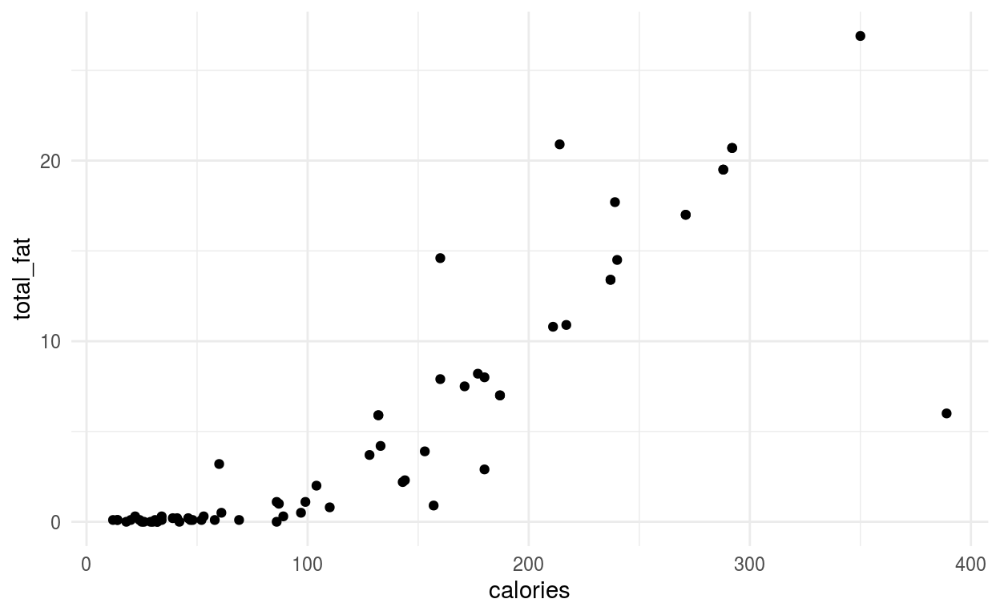
This plot, however, does not look any different than it would if we were just to plot all of the food together. The second layer of points just sits unassumingly on top of the rest of the data. To rectify this, we can color each layer a different color in order to distinguish them from one another. Let’s try to highlight the meat food group in a navy blue, while making the rest of the points a light grey:
food %>%
ggplot() +
geom_point(aes(x = calories, y = total_fat), color = "grey85") +
geom_point(aes(x = calories, y = total_fat), color = "navy", data = food_meat)
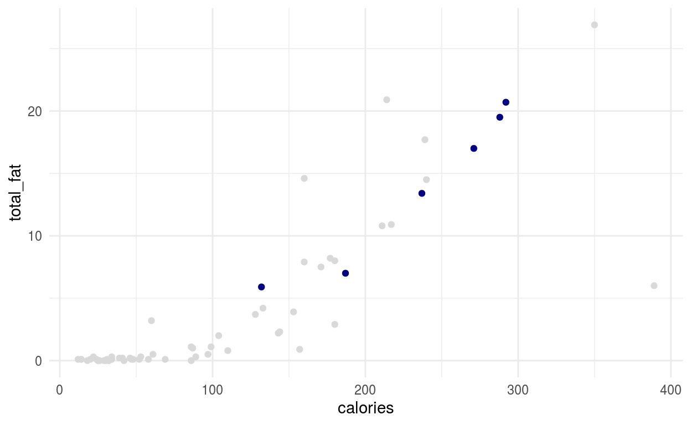
We now have a plot that shows exactly where the meats are relative to the other food items. We can further build up the plot by showing the names of just these rows of the dataset as well:
food %>%
ggplot() +
geom_point(aes(x = calories, y = total_fat), color = "grey85") +
geom_point(aes(x = calories, y = total_fat), color = "navy", data = food_meat) +
geom_text_repel(
aes(x = calories, y = total_fat, label = item),
color = "navy",
data = food_meat
)
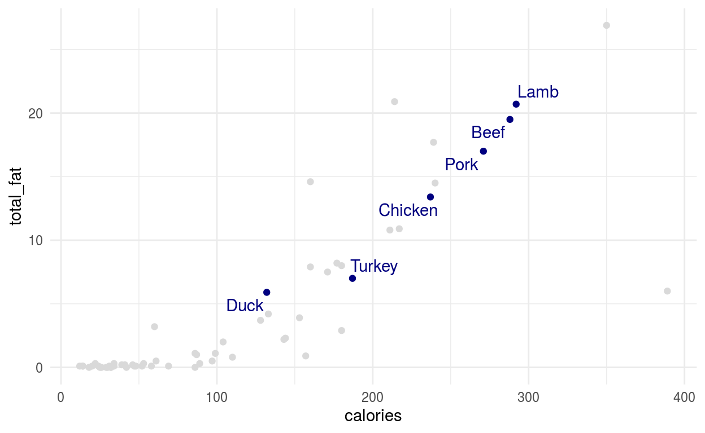
Notice that the code is starting to get a bit more complicated and some of the graphic layers are becoming a bit long. This is a good place to use the shorthand notation to inherit aesthetics across layers, like this:
food %>%
ggplot(aes(calories, total_fat)) +
geom_point(color = "grey85") +
geom_point(color = "navy", data = food_meat) +
geom_text_repel(aes(label = item), color = "navy", data = food_meat)
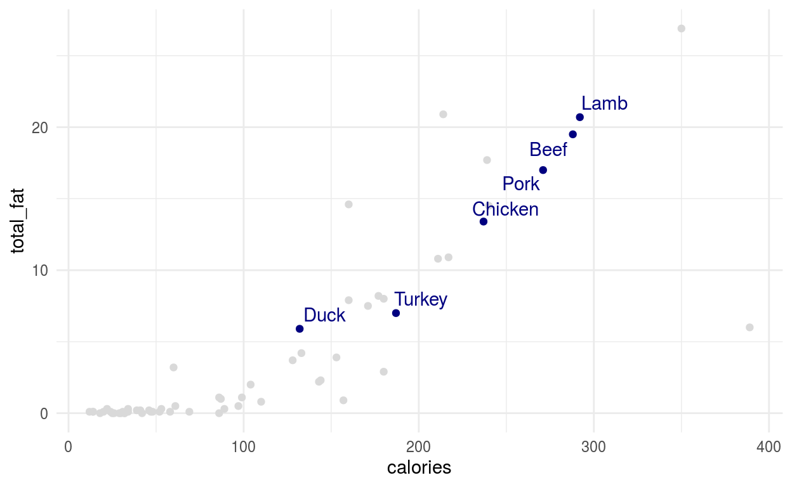
Notice how a relatively small set of commands can be put together in different ways to build a variety of plots. Already, we are making further progress towards building informative and beautiful graphics in R!
Selecting Columns
It is also possible to take a subset of the columns in a data set. To do this, we make use of the verb select. We pass it the names of the variables we want to keep in the output data set, in the (possibly new) order that we want the columns to be arranged in. Here, for example, is a new version of the foods data set containing only the food item name followed by the amount of Vitamin A and Vitamin C:
food %>%
select(item, vitamin_a, vitamin_c)
# A tibble: 61 x 3
item vitamin_a vitamin_c
<chr> <dbl> <dbl>
1 Apple 1 8
2 Asparagus 15 9
3 Avocado 3 17
4 Banana 1 15
5 Chickpea 0 3
6 String Bean 14 27
7 Beef 0 0
8 Bell Pepper 63 317
9 Crab 0 5
10 Broccoli 12 149
# … with 51 more rowsWe will not need to use the select verb as often as filter because for the most part having extra variables around does not effect data visualizations or data models. However, it can be useful to displaying results and building tables.
As we saw above, the Vitamin A and Vitamin C columns were cut-off in the original output but are not visible in the selected data set version. Removing and reordering unneeded columns are important applied operations.
Arranging Rows
The verb filter determined a subset of rows to keep from the original data set. The arrange verb, in contrast, keeps all of the original data but re-orders its rows.
Specifically, we give it one or more variable names and it sorts the data by the first variable from smallest to largest (or alphabetically for character variables). In the case of ties, the second variable is used if given. More variables can be given to further break additional ties. Here is an example where we order the data set first by food_group and then by calories:
food %>%
arrange(food_group, calories)
# A tibble: 61 x 17
item food_group calories total_fat sat_fat cholesterol sodium
<chr> <chr> <dbl> <dbl> <dbl> <dbl> <dbl>
1 Milk dairy 60 3.2 1.86 10 40
2 Yogurt dairy 99 1.1 0.742 5 53
3 Sour Cream dairy 214 20.9 13.0 44 53
4 Cheese dairy 350 26.9 16.6 83 955
5 Crab fish 87 1 0.222 78 293
6 Lobster fish 97 0.5 0.106 71 700
7 Haddock fish 128 3.7 0.69 66 402
8 Flounder fish 133 4.2 0.867 56 417
9 Shrimp fish 144 2.3 0.446 206 613
10 Tuna fish 153 3.9 0.811 53 366
# … with 51 more rows, and 10 more variables: carbs <dbl>,
# fiber <dbl>, sugar <dbl>, protein <dbl>, iron <dbl>,
# vitamin_a <dbl>, vitamin_c <dbl>, wiki <chr>, description <chr>,
# color <chr>In the new data set all of the dairy products come up first followed by the fish products. Within each group, the items are sorted from the lowest to highest number of calories.
The ordering can be reversed (i.e., from the highest to the lowest value) be wrapping a variable in the function desc(), such as this ordering from the most saturated fat to the least:
food %>%
arrange(desc(sat_fat))
# A tibble: 61 x 17
item food_group calories total_fat sat_fat cholesterol sodium
<chr> <chr> <dbl> <dbl> <dbl> <dbl> <dbl>
1 Cheese dairy 350 26.9 16.6 83 955
2 Sour Cream dairy 214 20.9 13.0 44 53
3 Lamb meat 292 20.7 8.76 96 394
4 Beef meat 288 19.5 7.73 87 384
5 Pork meat 271 17 6.17 90 384
6 Chicken meat 237 13.4 3.76 87 404
7 Catfish fish 240 14.5 3.25 69 398
8 Halibut fish 239 17.7 3.10 59 103
9 Duck meat 132 5.9 2.32 77 74
10 Cod fish 211 10.8 2.22 57 401
# … with 51 more rows, and 10 more variables: carbs <dbl>,
# fiber <dbl>, sugar <dbl>, protein <dbl>, iron <dbl>,
# vitamin_a <dbl>, vitamin_c <dbl>, wiki <chr>, description <chr>,
# color <chr>In the result here, “Cheese” has been placed at the top of the data set, followed by “Sour Cream” and “Lamb”.
Grouping and Summarizing
A rather important verb is summarize that collapses a data frame by using summary functions. Using this verb requires that we explain exactly how the data should be summarized. We will introduce several helper functions to make this process slightly easier.
Let’s start with an example. Here, we summarize our food data set by indicating the mean (average) value of the sugar variable across the entire data set:
food %>%
summarize(mean(sugar))
# A tibble: 1 x 1
`mean(sugar)`
<dbl>
1 3.42A helper function will format the column a little differently that is more usable for data analysis.
food %>%
summarize(sm_mean(sugar))
# A tibble: 1 x 1
sugar_mean
<dbl>
1 3.42Here we used the function sm_mean inside of the function summarize to produce the output. We specified which variable to compute the mean of by giving its name inside of the sm_mean function. The results shows us that the average amount of sugar in a 100g portion of all of the foods is 3.419g.
In order to compute multiple summaries at once, we can pass multiple functions together are once. For example, here we compute the mean value of three nutritional measurements:
# A tibble: 1 x 3
sugar_mean calories_mean vitamin_a_mean
<dbl> <dbl> <dbl>
1 3.42 114. 16.1Notice that R creates a new data set and intelligently chooses the variable names. There are a number of other useful summary functions that work similarly, such as sm_min, sm_max, sm_sum, and sm_sd (standard deviation).
Multiple output values
Some summary functions return multiple columns for a given variable. For example, sm_quartiles gives the five-number summary of a variable: its minimum value, the first quartile (25th percentile), the median (50th percentile), the third quartile (75th percentile), and the maximum value. As with the other summary functions, smart variable names are automatically created in R:
food %>%
summarize(sm_quartiles(calories))
# A tibble: 1 x 5
calories_min calories_q1 calories_median calories_q3 calories_max
<dbl> <dbl> <dbl> <dbl> <dbl>
1 12 34 87 171 389Functions such as sm_deciles and sm_percentiles give a similar output, but with additional cutoff values. These can be useful in trying to describe the distribution of numeric variables in large data sets.
Summarizing the data set to a single row can be useful for understanding the general trends in a data set or highlighting outliers. However, the real power of the summary function comes when we pair it with grouped manipulations. This will allow us to produce summaries within one or more grouping variables in our data set.
When we use the group_by function, subsequent uses of the summarize function will produce a summary that describes the properties of variables within the variable used for grouping. The variable name(s) placed inside of the group_by function indicate which variable(s) should be used for the groups. For example, here we compute the mean number of calories of each food group:
food %>%
group_by(food_group) %>%
summarize(sm_mean(calories))
# A tibble: 6 x 2
food_group calories_mean
* <chr> <dbl>
1 dairy 181.
2 fish 167.
3 fruit 54.9
4 grains 196.
5 meat 234.
6 vegetable 37.4Notice that the output data set contains a column for the grouping variable (food_group) and the summarized variable (calories_mean). The summarized variable name is exactly the same as the non-grouped version and the final line of code looks exactly the same as before. However, the output data set now contains six rows, one for each food group.
Any summarization function that can be used for an ungrouped data set can also be used for a grouped data set. Also, as before, we can put multiple summary functions together to obtain different measurements of each group.
# A tibble: 6 x 3
food_group calories_mean total_fat_mean
* <chr> <dbl> <dbl>
1 dairy 181. 13.0
2 fish 167. 7.22
3 fruit 54.9 1.04
4 grains 196. 2.56
5 meat 234. 13.9
6 vegetable 37.4 0.281Notice that the automatically produced variable names should make it clear which column corresponds to each summary function.
There are several additional summary functions that will be useful for analyzing data. The function sm_count takes no arguments and returns a variable called count that counts the total number of rows in the data set:
food %>%
group_by(food_group) %>%
summarize(sm_count())
# A tibble: 6 x 2
food_group count
* <chr> <int>
1 dairy 4
2 fish 14
3 fruit 16
4 grains 5
5 meat 6
6 vegetable 16This tells us how many times each type of food group occurs in the data set. Similarly, the function sm_na_count tells us how many values of a variable are missing:
food %>%
group_by(food_group) %>%
summarize(sm_count(), sm_na_count(calories))
# A tibble: 6 x 3
food_group count calories_na_count
* <chr> <int> <int>
1 dairy 4 0
2 fish 14 0
3 fruit 16 0
4 grains 5 0
5 meat 6 0
6 vegetable 16 0In this case there are no missing values for the calories variable.
The summary function sm_paste collapses all of the values in a character variable. For example, applying this summary it to the item category after grouping by color, we can see all of the foods in the data set associated with a specific color:
food %>%
group_by(color) %>%
summarize(sm_paste(item))
# A tibble: 8 x 2
color item_paste
* <chr> <chr>
1 brown Chickpea; Mushroom; Oat; Quinoa; Brown Rice
2 green Asparagus; Avocado; String Bean; Bell Pepper; Broccoli; Cabb…
3 orange Cantaloupe; Carrot; Orange; Sweet Potato; Tangerine
4 pink Grapefruit; Peach; Salmon; Shrimp
5 purple Grape; Plum
6 red Apple; Beef; Crab; Duck; Lamb; Lobster; Strawberry; Tomato; …
7 white Catfish; Cauliflower; Chicken; Clam; Cod; Flounder; Halibut;…
8 yellow Banana; Cheese; Corn; Lemon; Pineapple Finally, note that it is possible to define your own summary functions using other R functions. To do this, we have to specify the name of the new variable explicitly. For example, here is an alternative way of computing the mean of the amount of Vitamin A within each food color:
food %>%
group_by(color) %>%
summarize(avg_vitamin_a = mean(vitamin_a)) %>%
arrange(desc(avg_vitamin_a))
# A tibble: 8 x 2
color avg_vitamin_a
<chr> <dbl>
1 orange 141.
2 green 11.1
3 pink 8.75
4 yellow 4.4
5 purple 4
6 red 2.78
7 white 2.63
8 brown 0 Geometries for summaries
We can use summarized data sets to produce new data visualizations. For example, consider summarizing the average number of calories, average total fat, and number of items in each food groups. We can take this data and construct a scatter plot that shows the average fat and calories of each food group, along with informative labels. Here’s the code to make this visualization:
food %>%
group_by(food_group) %>%
summarize(sm_mean(calories), sm_mean(total_fat), sm_count()) %>%
ggplot(aes(calories_mean, total_fat_mean)) +
geom_point(aes(size = count), color = "grey85") +
geom_text_repel(aes(label = food_group))
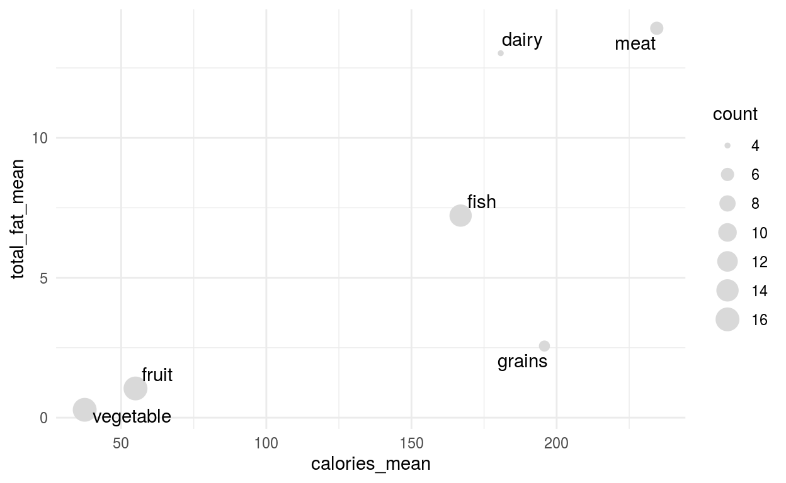
Scatterplots are often useful for displaying summarized information. There are two additional geom types that often are useful specifically for the case of summarized data sets.
If we want to create a bar plot, where the heights of the bars as given by a column in the data set, we can use the geom_col layer type. For this, assign a categorical variable to the x-aesthetic and the count variable to the y-aesthetic. For example, here is a bar plot showing the number of items in each food group:
food %>%
group_by(food_group) %>%
summarize(sm_count()) %>%
ggplot() +
geom_col(aes(x = food_group, y = count))
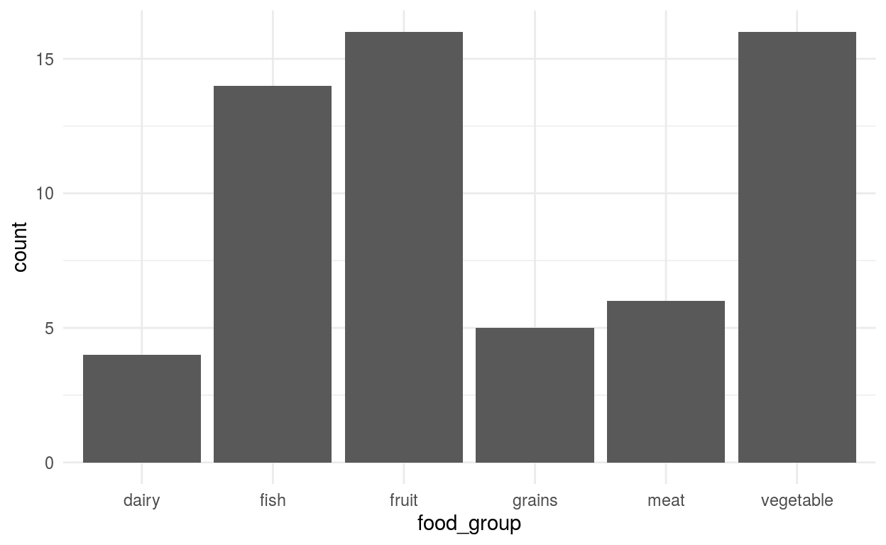
There are two specific things to keep in mind with the geom_col layer. First, there are two color-related aes categories: the border of the bars (color) and the color used to shade the inside of the bars (fill). We can change these exactly as we did with the single color value used with scatter plots. Also, if we want to produce a bar plot with horizontal bars, this can be done by adding the special layer coord_flip() at the end of the plotting command.
food %>%
group_by(food_group) %>%
summarize(sm_count()) %>%
ggplot(aes(x = food_group, y = count)) +
geom_col(color = "black", fill = "white") +
coord_flip()
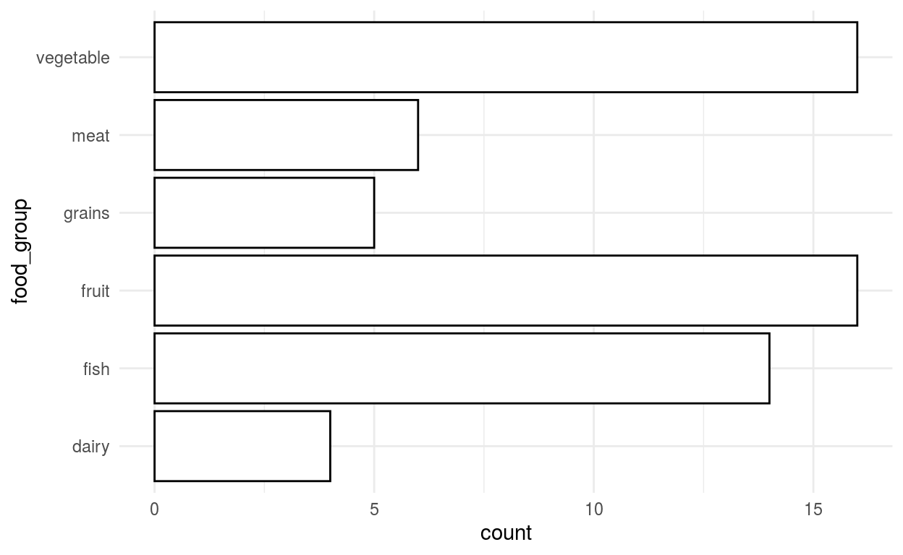
I find that using a white fill color and a black border is often a good-looking starting point. Also, you will notice that making the bars horizontal will make it easier to read the category names when there are a larger number of categories.
It is possible to group a data set by multiple variables. To do this, we can provide additional variables to the group_by function separated by commas. For example, we could group the food data set into food group and color, and summarize each combination of the two:
# A tibble: 21 x 4
# Groups: food_group [6]
food_group color count calories_mean
<chr> <chr> <int> <dbl>
1 dairy white 3 124.
2 dairy yellow 1 350
3 fish pink 2 158.
4 fish red 3 112.
5 fish white 9 187.
6 fruit green 4 77.2
7 fruit orange 3 44.7
8 fruit pink 2 35.5
9 fruit purple 2 57.5
10 fruit red 2 42
# … with 11 more rowsNotice that now there is one row for each combination of the two groups. However, there is no row for combinations that do not exist. So, there is no row for pink dairy products nor for white fruit. Examples of several common uses for multiple groups are given in the exercises.
Mutate verb
The final core dplyr verb that we will look at is used to create a new variable in our data set based on other variables that are already present. This verb is called mutate, and works by giving it the name of the variable you want to create followed by the code that describes how to construct the variable in terms of the rest of the data.
As an example, consider computing the number of calories in an 200g portion of each food. All of the variables in the data set are currently given as 100g portions, so to compute this we need to multiply the calories variables by 2. To do this, we use the mutate verb to name and describe a new variable calories_200g.
food %>%
mutate(calories_200g = calories * 2)
# A tibble: 61 x 18
item food_group calories total_fat sat_fat cholesterol sodium
<chr> <chr> <dbl> <dbl> <dbl> <dbl> <dbl>
1 Apple fruit 52 0.1 0.028 0 1
2 Asparagus vegetable 20 0.1 0.046 0 2
3 Avocado fruit 160 14.6 2.13 0 7
4 Banana fruit 89 0.3 0.112 0 1
5 Chickpea grains 180 2.9 0.309 0 243
6 String Be… vegetable 31 0.1 0.026 0 6
7 Beef meat 288 19.5 7.73 87 384
8 Bell Pepp… vegetable 26 0 0.059 0 2
9 Crab fish 87 1 0.222 78 293
10 Broccoli vegetable 34 0.3 0.039 0 33
# … with 51 more rows, and 11 more variables: carbs <dbl>,
# fiber <dbl>, sugar <dbl>, protein <dbl>, iron <dbl>,
# vitamin_a <dbl>, vitamin_c <dbl>, wiki <chr>, description <chr>,
# color <chr>, calories_200g <dbl>Notice that there is a new variable named calories_200g that has been added as the last column in the data set. Because it is added at the end of the data set, it gets hidden in the output shown above. Making use of select allows us to see the new values:
food %>%
mutate(calories_200g = calories * 2) %>%
select(item, food_group, calories, calories_200g)
# A tibble: 61 x 4
item food_group calories calories_200g
<chr> <chr> <dbl> <dbl>
1 Apple fruit 52 104
2 Asparagus vegetable 20 40
3 Avocado fruit 160 320
4 Banana fruit 89 178
5 Chickpea grains 180 360
6 String Bean vegetable 31 62
7 Beef meat 288 576
8 Bell Pepper vegetable 26 52
9 Crab fish 87 174
10 Broccoli vegetable 34 68
# … with 51 more rowsAnd now we can see that the new column has been created by doubling the number given the calories column.
Note that mutate can also be used to modify any existing column in the data set by using the name of an extant variable. In this case the position of the variable within the tables does not change.
The mutate verb itself has a relatively straightforward syntax. The main challenge is knowing how to apply and chain together the various transformations that are useful within an analysis. In the next few sections, we highlight several common types of operations that we will be useful in subsequent applications.
Conditional values
Many of the uses for the mutate verb involve assigning one value when a set of conditions is true and another if the conditions are false. For example, consider creating a new variable called sugar_level based on the relative amount of sugar in each food item. We might classify a food has having a “high” sugar level if has more than 10g of sugar per 100g serving, and a “normal” amount otherwise. In order to create this variable, we need the function if_else.
The if_else function has three parts: a TRUE/FALSE statement, the value to use when the statement is true, and the value to use when it is false. Here is an example to create our new variable:
food %>%
mutate(sugar_level = if_else(sugar > 10, "high", "normal")) %>%
select(item, food_group, sugar, sugar_level)
# A tibble: 61 x 4
item food_group sugar sugar_level
<chr> <chr> <dbl> <chr>
1 Apple fruit 10.4 high
2 Asparagus vegetable 1.88 normal
3 Avocado fruit 0.66 normal
4 Banana fruit 12.2 high
5 Chickpea grains 5.29 normal
6 String Bean vegetable 1.4 normal
7 Beef meat 0 normal
8 Bell Pepper vegetable 4.2 normal
9 Crab fish 0 normal
10 Broccoli vegetable 1.7 normal
# … with 51 more rowsLooking at the first rows of data, we see that apples and bananas are classified as high sugar foods, whereas the other sugar levels are given the sugar level category of “normal”.
The if_else function can be used to produce any number of categories by using it multiple times. Let’s modify our sugar level variable to now have three categories: “high” (over 10g), “low” (less than 1g), and “normal” (between 1g and 10g). There are several different ways to get to the same result, but I find the easiest is to start by assigning a default value and then changing the value of the new variable in sequence. For example, here some code that produces our new categories:
food %>%
mutate(sugar_level = "default") %>%
mutate(sugar_level = if_else(sugar < 1, "low", sugar_level)) %>%
mutate(sugar_level = if_else(sugar > 10, "high", sugar_level)) %>%
mutate(sugar_level = if_else(between(sugar, 1, 10), "normal", sugar_level)) %>%
select(item, food_group, sugar, sugar_level)
# A tibble: 61 x 4
item food_group sugar sugar_level
<chr> <chr> <dbl> <chr>
1 Apple fruit 10.4 high
2 Asparagus vegetable 1.88 normal
3 Avocado fruit 0.66 low
4 Banana fruit 12.2 high
5 Chickpea grains 5.29 normal
6 String Bean vegetable 1.4 normal
7 Beef meat 0 low
8 Bell Pepper vegetable 4.2 normal
9 Crab fish 0 low
10 Broccoli vegetable 1.7 normal
# … with 51 more rowsIn each if_else step we are telling the mutate function that if the condition is false set sugar_level equal to itself. In other words, if the condition does not hold, do not change the value of the variable.
In may wonder why we created a “default” value for the variable sugar_level. It would have been one less line of code to set the default value to “normal” and remove the final mutate function. The reason for the approach above is three-fold. First, it’s easier to understand what the code is doing in it’s current format because each condition (“high”, “normal”, and “low”) is explicitly coded. Secondly, it creates a nice check on our code and data. If we find a row of the output that still has the value “default” we will know that there is a problem somewhere. Finally, the code above will more safely handle the issues with missing values, and issue that we will return to shortly.
Factors
R has a special data type called a “factor” (abbreviated “fct”) that is specifically designed to handle categorical variables. It is typically not a good idea to store data as a factor because the resulting variables have some odd, error-producing, behaviors. However, it can be useful to create a factor as part of a mutate function just prior to creating a data visualizations.
For us, biggest difference between factors and character vectors is that a factor vector has a default ordered of its unique values, called the factor’s “levels”. Creating and understanding factors is useful because it allows us to change the ordering of categories within visualizations and models (which by default is done alphabetically).
One of the easiest ways to produce a factor variable with a given order is through the function fct_inorder. It will order the categories in the same order that they (first) appear in the data set. Combining this with the arrange function provides a lot of control over how categories become ordered. For example, the following code produces a bar plot of the food groups in our data set arranged from the largest category to the smallest category:
food %>%
group_by(food_group) %>%
summarize(sm_count()) %>%
arrange(desc(count)) %>%
mutate(food_group = fct_inorder(food_group)) %>%
ggplot() +
geom_col(aes(food_group, count))
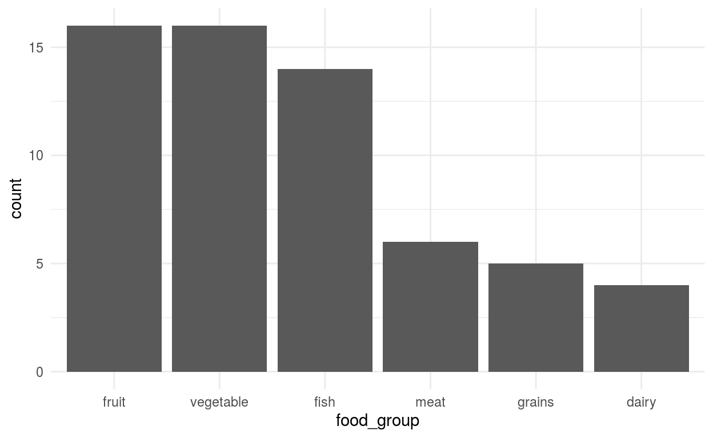
Other useful functions for manipulating categories include fct_relevel for manually putting one category first and fct_lump_n for combining together the smallest categories into a collective “Other” category.
Mutate summaries
All of summary functions that were introduced in the previous notebook can also be applied within the mutate version. Instead of reducing the data to a single summary row, summarizing within the mutate verb duplicates the summary statistic in each row of the data set. Here is an example of including the average number of calories across all rows of the data set:
food %>%
mutate(sm_mean(calories))
# A tibble: 61 x 18
item food_group calories total_fat sat_fat cholesterol sodium
<chr> <chr> <dbl> <dbl> <dbl> <dbl> <dbl>
1 Apple fruit 52 0.1 0.028 0 1
2 Asparagus vegetable 20 0.1 0.046 0 2
3 Avocado fruit 160 14.6 2.13 0 7
4 Banana fruit 89 0.3 0.112 0 1
5 Chickpea grains 180 2.9 0.309 0 243
6 String Be… vegetable 31 0.1 0.026 0 6
7 Beef meat 288 19.5 7.73 87 384
8 Bell Pepp… vegetable 26 0 0.059 0 2
9 Crab fish 87 1 0.222 78 293
10 Broccoli vegetable 34 0.3 0.039 0 33
# … with 51 more rows, and 11 more variables: carbs <dbl>,
# fiber <dbl>, sugar <dbl>, protein <dbl>, iron <dbl>,
# vitamin_a <dbl>, vitamin_c <dbl>, wiki <chr>, description <chr>,
# color <chr>, calories_mean <dbl>As with any call to mutate, all of the original variables are kept in the output and the new variable is added at the end. Using select we can verify that the average calories has in fact been added to each row of the table.
food %>%
mutate(sm_mean(calories)) %>%
select(item, food_group, calories, calories_mean)
# A tibble: 61 x 4
item food_group calories calories_mean
<chr> <chr> <dbl> <dbl>
1 Apple fruit 52 114.
2 Asparagus vegetable 20 114.
3 Avocado fruit 160 114.
4 Banana fruit 89 114.
5 Chickpea grains 180 114.
6 String Bean vegetable 31 114.
7 Beef meat 288 114.
8 Bell Pepper vegetable 26 114.
9 Crab fish 87 114.
10 Broccoli vegetable 34 114.
# … with 51 more rowsThe power of mutate summaries becomes particularly clear when grouping the data. If we group the data set by one or more variables and apply a summary function within a mutation, the repeated summaries will be done within each group. Here is an example of adding the average calories of each food group to the data set:
food %>%
group_by(food_group) %>%
mutate(sm_mean(calories)) %>%
select(item, food_group, calories, calories_mean)
# A tibble: 61 x 4
# Groups: food_group [6]
item food_group calories calories_mean
<chr> <chr> <dbl> <dbl>
1 Apple fruit 52 54.9
2 Asparagus vegetable 20 37.4
3 Avocado fruit 160 54.9
4 Banana fruit 89 54.9
5 Chickpea grains 180 196.
6 String Bean vegetable 31 37.4
7 Beef meat 288 234.
8 Bell Pepper vegetable 26 37.4
9 Crab fish 87 167.
10 Broccoli vegetable 34 37.4
# … with 51 more rowsFollowing this with a filter, for example, would allow us to select all of the foods that have a less than average number of calories within their food group. We will see many examples of grouped mutate summaries throughout our applications.
Labels and themes
We have seen a number of ways to create and modify data visualizations. One thing that we did not cover was how to label our axes.
While many data visualization guides like to stress the importance of labelling axes, while in the exploratory phase of analysis it is often best to simply use the default labels provided by R. These are useful for a number of reasons. First, they require minimal effort and make it easy to tweak axes, variables, and other settings without spending time tweaking with the labels. Secondly, the default labels use the variable names in our dataset. When writing code this is exactly what we need to know about a variable to use it in additional plots, models, and data manipulation tasks.
Of course, once we want to present our results to others, it is essential to provide more detailed descriptions of the axes and legends in our plot. Fortunately, this is relatively easy using the grammar of graphics.
In order to change the labels in a plot, we can use the labs function as an extra part of our plot. Inside the function, we assign labels to the names of aes values that you want to describe. Leaving a value unspecified will keep the default value in place. Labels for the x-axis and y-axis will be go on the sides of the plot. Labels for other aesthetics such as size and color will be placed in the legend. Here is an example of a scatterplot with labels for the three aesthetics:
food %>%
ggplot() +
geom_point(aes(x = calories, y = sat_fat, color = food_group)) +
labs(
x = "Calories per 100g",
y = "Saturated Fat (grams per 100g)",
color = "Food Group"
)
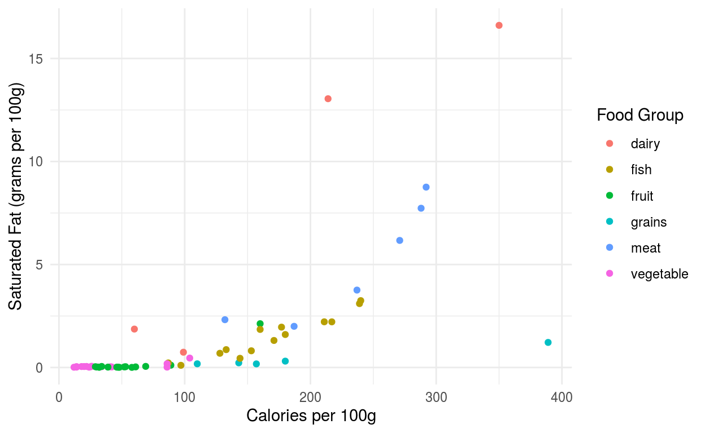
Notice that the descriptions inside of the labs function is fairly long. The code here breaks it up by putting each argument on its own line (indented a further two spaces). This is good practice when using functions with a lot of arguments.
We can also had a title (and optional subtitle and caption) to the plot by adding these as named arguments to the labs function.
food %>%
ggplot() +
geom_point(aes(x = calories, y = sat_fat, color = food_group)) +
labs(
title = "Main title",
subtitle = "A little more detail",
caption = "Perhaps the source of the data?"
)
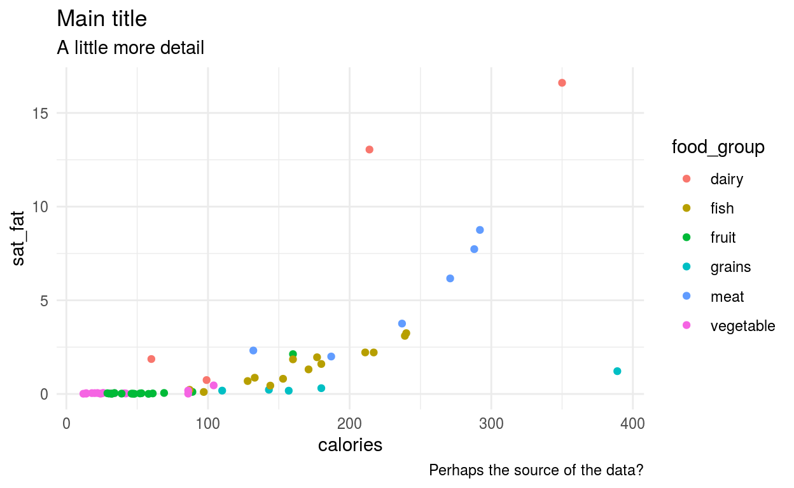
Another way to prepare our graphics for publication is to modify the theme of a plot. One useful option is to set the default plot to theme_minimal. As the name implies, it removes most of the clutter of other choices while keeping grid lines and other visual cues to help interpret a dataset.
When presenting information for external publication, I prefer to use the theme called theme_sm based on the work of Edward Tufte. To set the theme, just call the following line of code sometime before making your plot:
theme_set(theme_sm())
Now, when we construct a plot it will use the newly assigned theme:
food %>%
ggplot() +
geom_point(aes(x = sugar, y = total_fat))
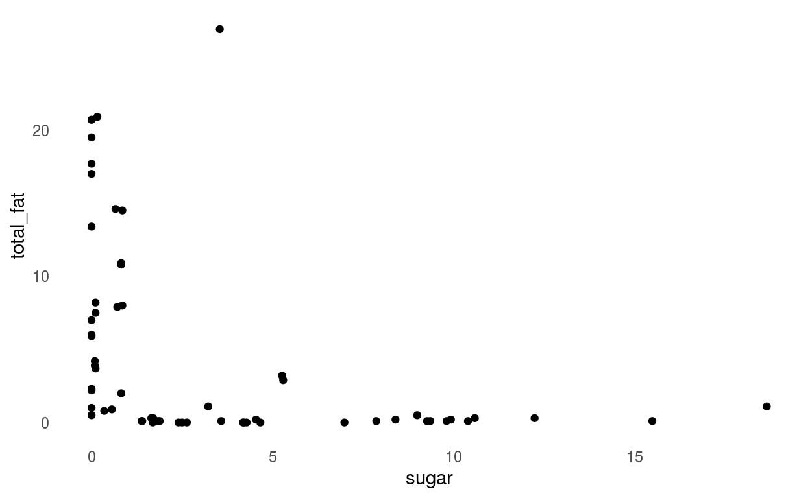
The Tufte theme is designed to use as little “ink” as possible, thus focusing the reader on the data. It can be a bit too minimal when first exploring the dataset, but is a great tool for presenting your results.